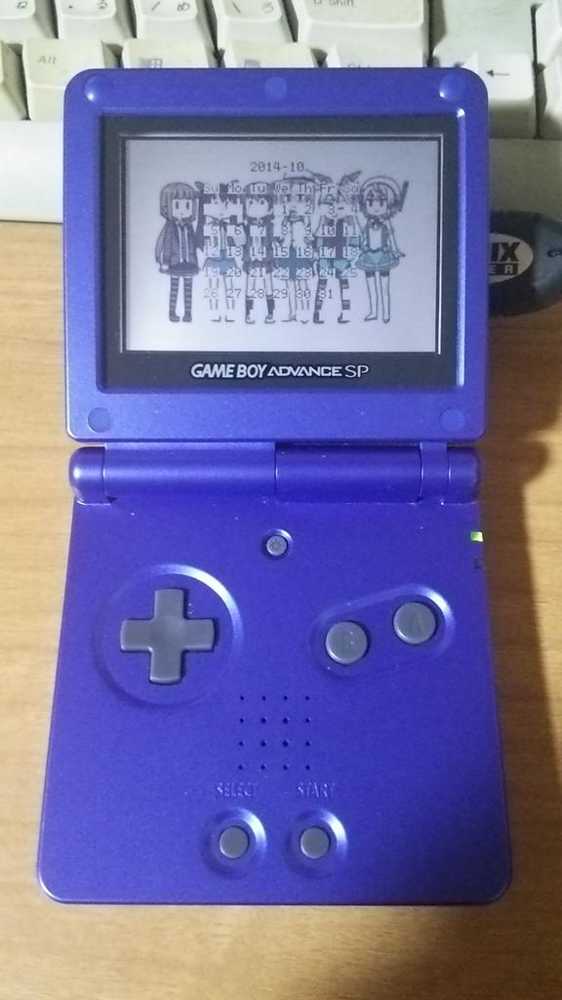
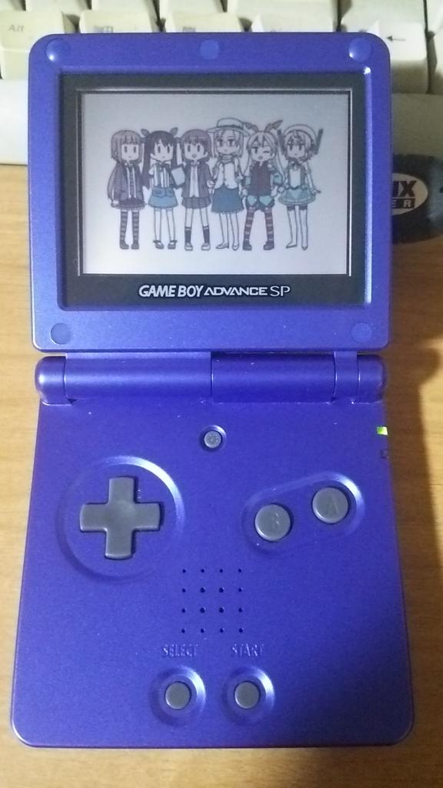
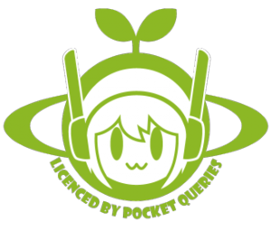

この作品はユニティちゃんライセンス条項の元に提供されています
2014 Copyright (c) POCKET QUERIES

プロ生ちゃん #カレンダープログラミング プチコンテスト 2014 向けに作成した、ゲームボーイアドバンス (GBA) 上でカレンダーを表示するプログラム gbacal の、 マスコットアプリ文化祭 2014 (Mascot Character Apps Contest) 版です。
…といっても、背景に画像を表示しただけですが (＞＜；
背景画像を除くソースコード一式と、ビルドしたバイナリです。
最新のソースコード一式は GitHub yoheie/gbacal の mascotapp ブランチでも公開しています。
ReadMe.md の『開発環境』・『事前準備』・『ビルド・実行手順』を参照してください。
背景画像にはスペシャルデータとして提供されている大沖さん作のキャラクターイラストを使用しています。
| 美雲このは・美雲あんず | (c) GMO Internet, Inc. |
| プロ生ちゃん (暮井 慧) | (c) プログラミング生放送 |
| クラウディア・窓辺 | (c) 2011 Microsoft Corporation All Rights Reserved. |
| ユニティちゃん (大鳥こはく) | この作品はユニティちゃんライセンス条項の元に提供されています |
| クエリちゃん (クエリ・ラブクラフト) |  2014 Copyright (c) POCKET QUERIES |